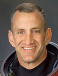

Lyndon B. Johnson Space Center
Houston, Texas 77058
|
National Aeronautics and Space Administration Lyndon B. Johnson Space Center Houston, Texas 77058 |
 |
Biographical Data |
||
Charles Owen Hobaugh (Colonel, USMC, RET.)
NASA ASTRONAUT (FORMER)
PERSONAL DATA: Born November 6, 1961, in Bar Harbor, Maine. Married to the former Corinna Lynn Leaman of East Petersburg, Pennsylvania. They have four children. He enjoys weightlifting, volleyball, boating, water skiing, snow skiing, soccer, bicycling, running and rowing. His parents, Jimmie and Virginia Hobaugh, reside in Sault Ste. Marie, Michigan. Her parents, Jerry and Dottie Leaman, reside in East Petersburg, Pennsylvania.
EDUCATION: Graduated from North Ridgeville High School, North Ridgeville, Ohio, in 1980; received a Bachelor of Science degree in Aerospace Engineering from the U.S. Naval Academy in 1984.
ORGANIZATIONS: U.S. Naval Academy Alumni Association.
SPECIAL HONORS: Distinguished Graduate, U.S. Naval Academy; Joe Foss Award for Advanced Jet Training; Graduated with Distinction, U.S. Naval Test Pilot School; awarded the Legion of Merit, Distinguished Flying Cross, Meritorious Service Medal, Strike/Flight Air Medal, Navy and Marine Corps Achievement Medals, Combat Action Ribbon, Navy Unit Commendation and various other service awards.
EXPERIENCE: Hobaugh received his commission as a Second Lieutenant in the United States Marine Corps from the United States Naval Academy in May 1984. He graduated from the Marine Corps Basic School in December 1984. After a 6 month temporary assignment at the Naval Air Systems Command, he reported to the Naval Aviation Training Command and was designated a Naval Aviator in February 1987. He then reported to Marine V/STOL Attack Squadron VMAT-203 for initial AV-8B Harrier training. Upon completion of this training, he was assigned to Marine Attack Squadron VMA-331 and made overseas deployments to the Western Pacific at MCAS Iwakuni, Japan, and flew combat missions in the Persian Gulf during Desert Shield/Desert Storm aboard the USS Nassau. While assigned to VMA-331, he attended the Marine Aviation Warfare and Tactics Instructor Course and was subsequently assigned as the Squadron Weapons and Tactics Instructor. Hobaugh was selected for U.S. Naval Test Pilot School and began the course in June 1991. After graduation in June 1992, he was assigned to the Strike Aircraft Test Directorate as an AV-8 Project Officer and as the ASTOVL/JAST/JSF Program Officer. While there, he flew the AV-8B, YAV-8B (VSRA) and A-7E aircraft. In July 1994, he went back to the Naval Test Pilot School as an Instructor in the Systems Department, where he flew the F-18, T-2, U-6A and gliders. Hobaugh was assigned to the U.S. Naval Test Pilot School when he was selected for the astronaut program. He retired from the U.S. Marine Corps in September 2010.
He has logged over 5,000 flight hours in more than 40 different aircraft and has over 200 V/STOL shipboard landings.
NASA EXPERIENCE: Selected by NASA in April 1996, Hobaugh reported to the Johnson Space Center in August 1996. He completed 2 years of training and evaluation and was qualified for flight assignment as a pilot. Hobaugh was initially assigned technical duties in the Astronaut Office Spacecraft Systems/Operations Branch. Projects included Landing and Rollout, Evaluator in the Shuttle Avionics Integration Laboratory, Advanced Projects, Multifunction Electronics Display Enhancements, Advanced Cockpit and Cockpit Upgrade, Rendezvous and Close Proximity Operations and Visiting Vehicles prior to his first flight assignment. He also served as Capsule Communicator, working in the Mission Control Center as the voice to the crew. A veteran of three spaceflights, Hobaugh has logged more than 876 hours in space. He was the pilot on STS-104 in 2001 and STS-118 in 2007 and was the commander of STS-129 in 2009. Hobaugh resigned from NASA in August 2011.
SPACE FLIGHT EXPERIENCE: STS-104 (July 12 to July 24, 2001) was the 10th mission to the International Space Station (ISS). During the 13-day flight, the crew conducted joint operations with the Expedition 2 crew and performed three spacewalks (EVAs) to install the joint airlock, “Quest,” and outfit it with four high-pressure gas tanks. The mission was accomplished in 200 Earth orbits, traveling 5.3 million miles in 306 hours and 35 minutes.
STS-118 (August 7 to August 21, 2007) was the 119th space shuttle flight, the 22nd flight to the station and the 20th flight for Endeavour. During the mission, Endeavour's crew successfully added another truss segment, a new gyroscope and an external spare parts platform to the International Space Station. A new system that enables docked shuttles to draw electrical power from the station to extend visits to the outpost was activated successfully. A total of four EVAs were performed by three crewmembers. Endeavour carried approximately 5,000 pounds of equipment and supplies to the station and returned to Earth with approximately 4,000 pounds of hardware and obsolete equipment. Traveling 5.3 million miles in space, the STS-118 mission was completed in 12 days, 17 hours, 55 minutes and 34 seconds.
STS-129 (November 16 to November 29, 2009) was the 31st shuttle flight to the International Space Station. During the mission, the crew delivered two Express Logistics Carriers (ELC racks) to the International Space Station and approximately 30,000 pounds of replacement parts for systems that provide power to the station, keep it from overheating and maintain proper orientation in space. The mission also featured three EVAs. The STS-129 mission was completed in 10 days, 19 hours, 16 minutes and 13 seconds, traveling 4.5 million miles in 171 orbits, and returning to Earth with NASA Astronaut, Nicole Stott, following her tour of duty aboard the International Space Station.
SEPTEMBER 2011